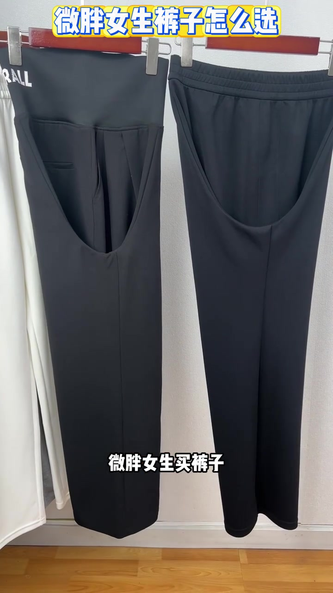
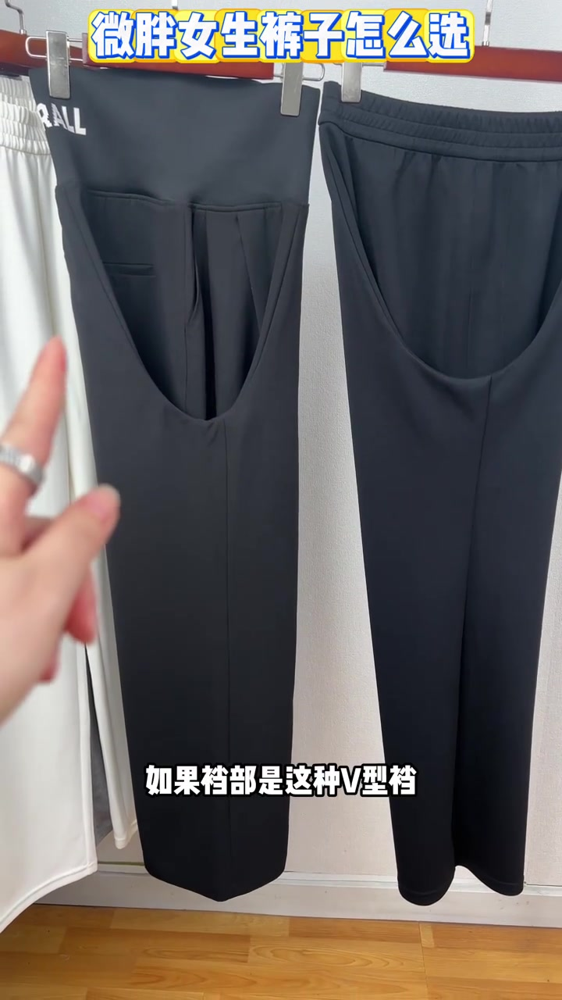
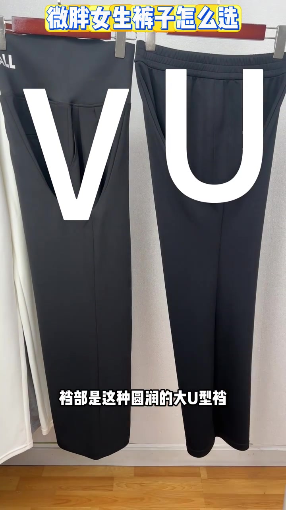
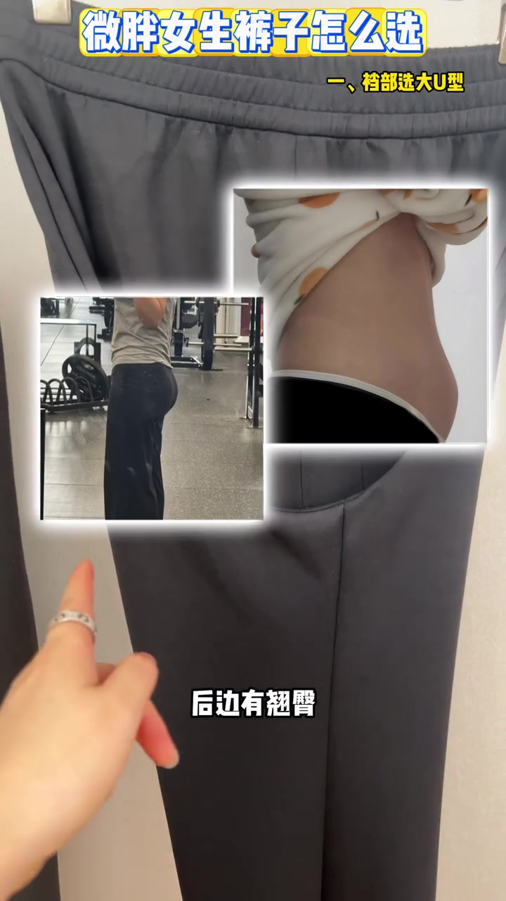
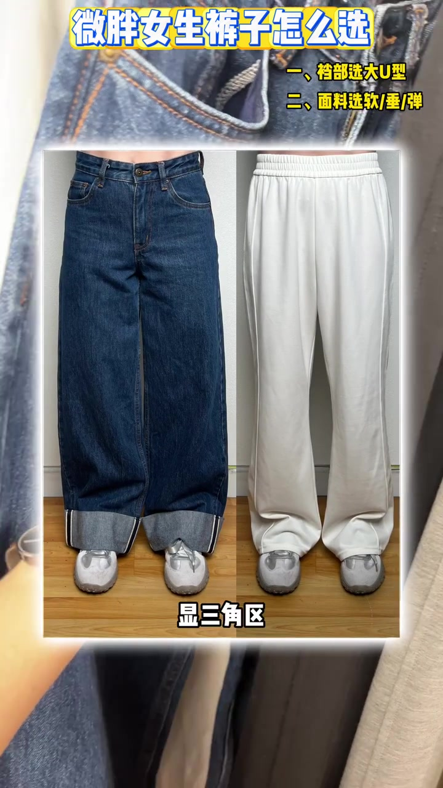
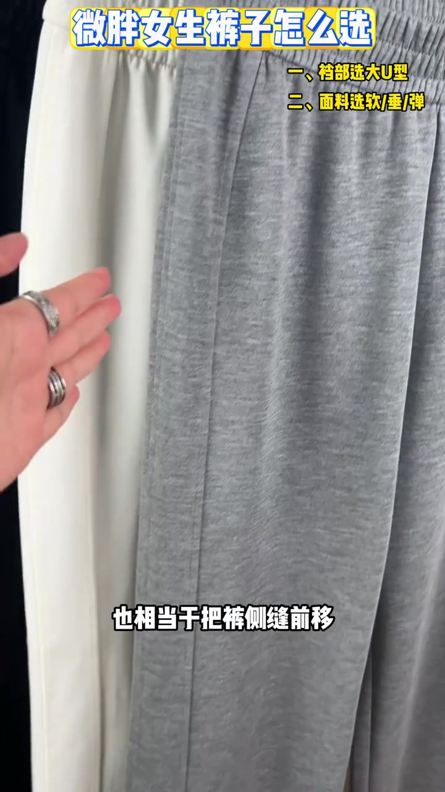
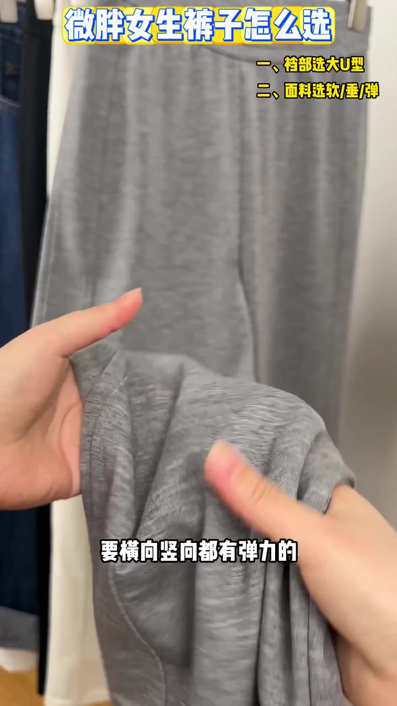
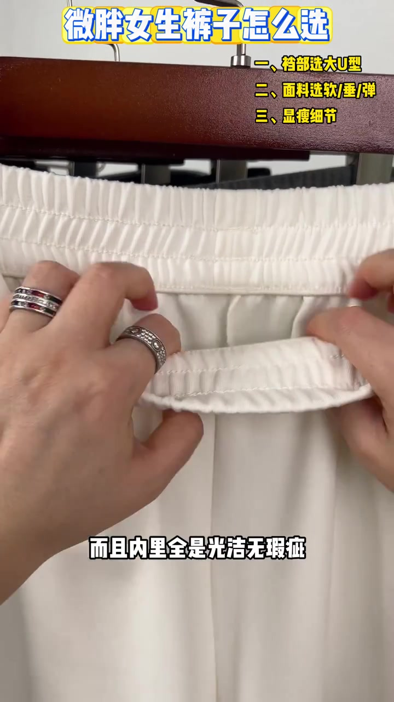

开场：挂架上的对照课
视频发生在一间浅色墙面的试衣/挂衣空间。顶部黄框标题始终写着“微胖女生裤子怎么选”，右侧清单会随讲解逐步叠出三点。讲述者用手指点裆缝、捏面料、拉开弹力，把抽象建议变成可见动作。
说明：Whisper 固定按中文识别时，把“V 型裆 / U 型裆 / 胯宽 / 翘臀 / 必入 / 三七身材 / 莫代尔氨纶”等误识为音近字；下文叙事以可见字幕与画面标注为准，文末转录区仍完整保留全部原始分段。
先看裆型：V 型差，大 U 型好
开场两条黑裤并排。讲述者抛出“作弊小技巧”：把一条裤腿放进另一条裤腿里，再从侧面看裆部。画面字幕先出现“如果裆部是这种 V 型裆”，手指点向左侧更尖的缝线；随后右侧标出大写字母 U，字幕改成“圆润的大 U 型裆——好的首选”。
可见字幕：“微胖女生买裤子，有个作弊小技巧……如果裆部是这种圆润的大 U 型裆，好的首选。”



接着她解释为什么微档会卡裆、磨大腿根：人有厚度，前面可能有小肚子、后面有翘臀、大腿根也更粗，圆润大 U 型才“空间更足”。右侧清单第一条叠出：“一、裆部选大 U 型”。她还插入侧身小肚子与翘臀示意，把体型需求钉在画面上。

这一段收尾落在舒适度：选对裆型，穿上才“不勒不卡”。
面料三字诀：软、垂、弹
讲解切到第二条：“面料选软 / 垂 / 弹”。她先捏一条白裤面料示范“选软不选硬”，再对比深蓝卷边牛仔裤与浅色垂感阔腿裤的上身效果——牛仔裤侧被字幕标出“显三角区”，硬挺面料会让胯宽腿粗更厚重、更容易卡裆。
- 软：摸起来软乎乎，上身像“穿了跟没穿似的”，不跟自己较劲
- 垂：顺着身体往下走，不贴肉、不支棱显壮，走路带风更利落
- 弹：横向竖向都有弹力才算真高弹；弹力大且回弹快，穿一天不松垮

中间她插入一个“显瘦小心机”：裤侧多裁一片，相当于把裤侧空出来。画面字幕出现“它多裁的这么一个裁片下来”，并点名“菇娘家凉感垂垂裤”这点设计能视觉收窄胯宽。随后双手横向拉开灰裤面料，字幕强调“要横向竖向都有弹力的”。成分上她优先推荐含莫代尔、氨纶两杆的面料——夏天冰凉、臀部不热。
可见字幕：“第二，挑面料就记住三个字：软、垂、弹……要横向竖向都有弹力的才叫真高弹。”


显瘦细节：高腰 + 加宽无痕腰头
清单第三条叠出“显瘦细节”。字幕直接说：“想显瘦，必入高腰款。”理由是微胖横向宽度更宽，更应加长纵向：抬高腰线去优化三七身材比例，小个子也能穿出大长腿感觉。
收尾她把镜头推到腰头：认准加宽无痕腰头，内里光洁无瑕疵、弹力到位，穿上才不勒肉、不卷边。画面里双手翻开米白阔腿裤的腰头内侧，让观众看到工艺细节。
可见字幕：“想显瘦必入高腰款……腰头就去认准这种加宽无痕的腰头……这种穿到身上才会不勒肉不卷边。”

这一趟挂架对照课讲完了什么
从侧面看裆型、用软垂弹筛面料、用高腰与加宽腰头拉长比例——视频把“微胖女生怎么选裤子”压成三条可当场执行的检查项。它是经验型示范，不是对所有体型的普遍证明。